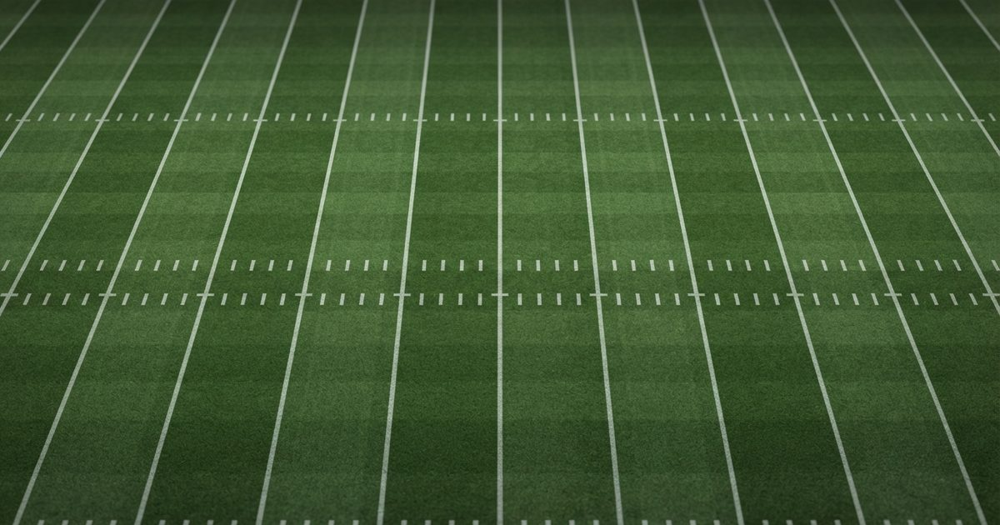
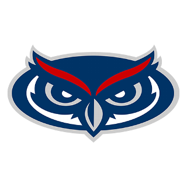
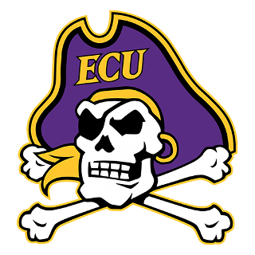

College Football First Quarter & First Half Betting
Week 13
NCAAF 1st Quarter and 1st Half betting this week: the games, our Matchup of the Week, the trends and streaks to watch, and the best price at every sportsbook.
Updated 4:36 PM ET
College Football Preview
Week 13
NCAAF · Sat 1:00 PM ET
@
11 OF 11FIRST QUARTERS UNDER FOR EAST CAROLINACollege Football Week 13 First Quarter & First Half Betting Preview
East Carolina Is 11 for 11 to the First-Quarter Under
Florida Atlantic brings an Over habit to East Carolina, and the first-quarter total has climbed from 11.5 to 12.5.
Read the full College Football Week 13 preview →The Slate
Tonight’s games are underway. Follow them live on Matchups →
FRI 7:30 PM ETNCAAF
 MINN@
MINN@ WIS
WISFRI 7:30 PM ETNCAAF

 TEX@
TEX@
 TAMU
TAMUFRI 9:00 PM ETNCAAF

 WVU@
WVU@
 UTAH
UTAHSAT 12:00 PM ETNCAAF

 BC@
BC@ MIA
MIASAT 12:00 PM ETNCAAF

 CMU@
CMU@
 BALL
BALLSAT 12:00 PM ETNCAAF

 LT@
LT@
 GASO
GASOSAT 12:00 PM ETNCAAF
 LOU@
LOU@
 UK
UKSAT 12:00 PM ETNCAAF

 MICH@
MICH@
 OSU
OSUSAT 12:00 PM ETNCAAF

 NAVY@
NAVY@
 CLT
CLTSAT 12:00 PM ETNCAAF
 NCSU@
NCSU@
 UNC
UNCSAT 12:00 PM ETNCAAF

 ND@
ND@
 SYR
SYRSAT 12:00 PM ETNCAAF
 CONN@
CONN@ WYO
WYONo more games on the board today.
Matchup of the Week
SAT 3:30 PM ETNCAAF
Huskie Stadium, Dekalb, IL · TV: MW+
Trend to watch
Northern IllinoisNIU 1Q ML
 -148
-148- Big favs · NIU 1Q ML79% (391-102)
- UTEP · Lost 1Q73% (8-3)
- UTEP · Lost 1Q3 straight
Streaks to Watch · Week 13
 Northern Illinois
Northern Illinois1H ML losses · 11 straight

 vs UTEP · Sat 3:30 PM ET
vs UTEP · Sat 3:30 PM ETMore streaks to watch
11NIU1H ML losses · 11 straightvs UTEP · Sat 3:30 PM ET East Carolina
East Carolina1Q Under · 11 straight
 vs Florida Atlantic · Sat 1:00 PM ET
vs Florida Atlantic · Sat 1:00 PM ETMore streaks to watch
11ECU1Q Under · 11 straightvs FAU · Sat 1:00 PM ET- UTEP
1H ML losses · 9 straight
@ Northern Illinois · Sat 3:30 PM ETMore streaks to watch
9UTEP1H ML losses · 9 straight@ NIU · Sat 3:30 PM ET  Boise State
Boise State1H ML wins · 9 straight
 @ Colorado State · Sat 6:00 PM ET
@ Colorado State · Sat 6:00 PM ETMore streaks to watch
9BOIS1H ML wins · 9 straight@ CSU · Sat 6:00 PM ET
 Sam Houston
Sam Houston1H ML losses · 8 straight

 @ Florida International · Sat 2:00 PM ET
@ Florida International · Sat 2:00 PM ETMore streaks to watch
8SHSU1H ML losses · 8 straight@ FIU · Sat 2:00 PM ET- Georgia Southern
1H ML wins · 7 straight
vs Louisiana Tech · Sat 12:00 PM ETMore streaks to watch
7GASO1H ML wins · 7 straightvs LT · Sat 12:00 PM ET 
 Liberty
Liberty1H ML wins · 7 straight

 @ Missouri State · Sat 2:00 PM ET
@ Missouri State · Sat 2:00 PM ETMore streaks to watch
7LIB1H ML wins · 7 straight@ MOST · Sat 2:00 PM ET
 Rutgers
Rutgers1H ML losses · 7 straight

 vs Michigan State · Sat 4:15 PM ET
vs Michigan State · Sat 4:15 PM ETMore streaks to watch
7RUTG1H ML losses · 7 straightvs MSU · Sat 4:15 PM ET Sacramento State
Sacramento State1Q Under · 7 straight
 @ Hawai'i · Sat 11:00 PM ET
@ Hawai'i · Sat 11:00 PM ETMore streaks to watch
7SAC1Q Under · 7 straight@ HAW · Sat 11:00 PM ET
 Troy
Troy1H Spread losses · 6 straight

 @ Arkansas State · Sat 3:00 PM ET
@ Arkansas State · Sat 3:00 PM ETMore streaks to watch
6TROY1H Spread losses · 6 straight@ ARST · Sat 3:00 PM ET
 Penn State
Penn State1Q Spread covers · 6 straight

 @ Maryland · Sat 3:30 PM ET
@ Maryland · Sat 3:30 PM ETMore streaks to watch
6PSU1Q Spread covers · 6 straight@ MD · Sat 3:30 PM ET
The Big Numbers
NCAAF · 1st Quarter


Hottest Trends
This week1H Spread
Back tired teams
56% (129-103) · +17.83u
League average 50%


1Q ML
Fade big underdogs
81% (364-84) · +15.25u
League average 50%


1H ML
Fade teams off a loss
59% (186-129) · +12.63u
League average 50%


1H ML
Back small favorites
60% (84-55) · +10.65u
League average 50%


1Q ML
Back road favorites
67% (136-67) · +9.62u
League average 50%
1H ML
Fade teams off a blowout
64% (127-71) · +7.52u
League average 50%


1Q Spread
Fade small favorites
59% (123-86) · +7.35u
League average 50%


This Week’s Results
Week 13Week 13 Results
Week 13 Results
Week 13 Results
Run To Your Bets College Football First Quarter & First Half Betting
▾
Run To Your Bets is built for College Football first quarters and first halves. College football is bully ball. Sharks versus minnows, big spreads and heavy moneylines in the first quarter and the first half. Think in scores, like the NFL, but expect more of them. Bets settle in about 50 minutes for the quarter and about 90 minutes for the half.
As of Friday, Nov 27, the first quarter has gone Over 45% (321-386) this season, the first half has gone Over 49% (342-362), and favorites have covered the first half spread 48% (334-367).
What's on this page
- Matchup of the Day: the game with the most trends lining up this week, and the price to play it.
- Streaks to Watch: teams on a run of 3 or more in a row, with a game this week.
- The Big Numbers: the largest spread, the heaviest favorite and the highest total on the board.
- The Slate: every College Football game this week with its first quarter and first half lines, then the scores as they go final.
Every record on Run To Your Bets is graded at the closing line, the last price before the game starts, and every number is updated every 10 minutes.
Where to start
Start with the Matchup of the Day, check the trends, and get the best price. New to first quarter and first half bets? The College Football First Quarter & First Half Betting Guide walks through the spread, the total and the moneyline, with examples.
More College Football first quarter and first half betting
First-segment betting in other sports
FAQ
What's the most common college football first quarter total?
9.5, with 10.5 right behind it. Low-total games see 7.5 to 9.5, and high-scoring games climb higher.
Do college first halves score more than half the points?
Usually yes. Starters play the whole first half, and blowouts get managed in the second half, so books set the first half a little over half the game total.
Does overtime count in a first half bet?
No. A first half bet settles at halftime. Overtime only counts toward full-game bets.